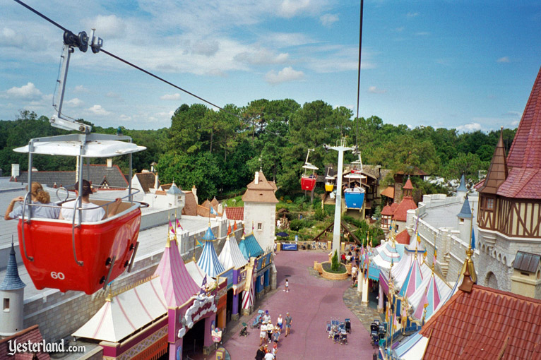

Test of modal/marker compatibility.


“I lived long enough to see the cure for death; to see the rise of the
Bitchun Society, to learn ten languages; to compose three symphonies; to realize
my boyhood dream of taking up residence in Disney World; to see the death of the
workplace and of work.”
—Cory Doctorow, “Down and Out in the Magic Kingdom”
“[T]he process of MEmorializing begins with a sting (punctum) received
from a news item, a story from the daily dose of information circulated by
journalism.”
—Gregory L. Ulmer, Electronic Monuments
“A Walt Disney World custodian plunged 40 feet to his death Sunday morning
after clinging to the outside of a rising cable car that had swept him from a
platform.”
—Orlando Sentinel, 14 February, 1999
Did you know? “It’s company policy... [N]o one dies at Disney” (Inside the Mouse 115). Depending on the source, when a tourist with a heart condition goes lifeless on a roller coaster, medical professionals by decree must wait to make the death pronouncement off-property. Such a claim suggests corporate mediation so concentrated as to censor death itself. Whether or not it can be verified through documentary evidence, in its own way this “Disney death myth” characterizes power relations to the Walt Disney Company and lends to its Orlando theme parks a sense of place.
Called a “Vatican with mouse ears” (qtd. in Clément 6), Disney holds tremendous influence in Florida, where it employs more people than any other company in the state, upwards of 56,000. Local policy often reflects Disney “flexing its bicep,” as one state senator put it. In 1967, Florida’s House granted unrivaled autonomy to the company: a private charter allows Disney to operate its parks independent of “state and county regulation of buildings, land use, airport and nuclear power plant construction, and even the distribution and sale of alcoholic beverages” (Foglesong 71). With its propensity for shaping elections and securing favorable legal conditions, it might not be so absurd to imagine Disney flexing its muscles to outlaw death too.
Of course, people do die at Disney World. Most result from pre-existing conditions, some from accidents. Some result from a horrifying collision of natural and built worlds: In 2016, two year-old Lane Graves was killed by an alligator at Disney’s Grand Floridian Resort and Spa. Florida theme parks report injuries and deaths to the state Department of Agriculture, and Disney has had to pay fines issued by the Occupational Safety and Health Administration (OSHA) for safety violations. Disney, however, has no obligation to publicize the deaths it cannot control. But with the advent of mobile computing technologies, this project, “Disney Death Tour,” reintroduces obscured narratives and their consequences into restricted write-space.
Disney Death Tour commemorates those who have died at Walt Disney World. It puts commercial tourism in conversation with critical spatial theory. As writing studies enters its space age, Disney theme parks become sites where writing technologies bring new civic potentials into focus. Structured as a guided tour, Death Tour redirects the flow of foot traffic and installs an alternative writing of theme park space. At the same time, it avoids above all else the supremacy of any narrative; this is a writing, but neither Death Tour nor the Disney Company can claim unilateral authority. Instead what this project makes clear is the continual structuring and restructuring of space determined by its participants.
Gregory L. Ulmer’s “MEmorial” genre offers a means of recognizing and writing communal attitudes towards tragedy. Whereas traditional monuments enshrine only official values, the MEmorial operates as an internet monument that facilitates civic practices for rewriting public space. MEmorials bridge the psychic distance between catastrophe and complacency by constructing a visceral reminder of abject social sacrifices, in this case in the tourist industry: At Disney World, you walk among the dead.
The tour starts with a single tragedy:
“Raymond Barlow, 65, was on a platform for the Skyway in Fantasyland when the cable-car ride was switched on for the park’s opening, sending one of the gondolas toward the part-time worker. The startled Clermont resident grabbed the four-person gondola and struggled to pull himself inside, park employees told investigators. On the way up, he apparently was looking for a place to land and let go over a flower bed, snapping some tree branches on the way down, the workers said.” (Orlando Sentinel, “Worker At Disney Plunges To His Death”)
Although the Skyway was torn down six months later, and Disney was fined $4,500 for “a ‘serious’ violation of safety standards,” the Sentinel reported that “The ride’s closing is not a result of any concerns about its safety.” As one commenter suggested, “Disney figured it could make better use of the space.” At the time of this writing, the Magic Kingdom features no marker or plaque memorializing Barlow’s fall, even though his sacrifice helps maintain Disney World and, at a different scale, the tourist industry in general. Disney Death Tour makes use of the space to better recognize similar abject losses.
The “Skyway,” torn down in 1999.
Barlow’s fall encapsulates some of Death Tour’s priorities. Power mediates space both physically, as in tearing down a ride, as well as through discursive construction. Conversely, as Sid Dobrin writes, “though one body orders a space to a particular end, that order is not necessarily recognized or obeyed by all who enter that space” (40). Corporations have images to maintain, which for Disney means preserving its status as the happiest, most magical place on earth. Space is carefully arranged to suppress or containerize the abject. Like a designated smoking section, Disney confines death to the Haunted Mansion, where the afterlife follows a script. In Barlow’s case, the official story dismisses any link between safety concerns and the decision to close the Skyway, but the claims of the powerful cannot assuage the death myth’s subversive appeal. Locative computing technologies like augmented reality and this tour’s phone app permit unsanctioned narratives into hypermediated corporate spaces.
Disney scrutinizes what enters and leaves its property such that truth seems to circulate only in the off-record whispers of its employees:
We had a guy last summer who went to EPCOT, stood under the golf ball, took a gun, and blew his head off. But he didn’t die. He stood right there in front of all those tourists and went “cluck” and brains blew everywhere. But he didn’t die there. The medic told me that they are not allowed to let them die there. Keep them alive by artificial means until they’re off Disney property, like there’s an imaginary line in the road and they go, “He’s alive, he’s alive, he’s dead.” (qtd. in Inside the Mouse 115)
But Death Tour is premised on an urban legend. If veracity were the only metric for a narrative’s value, this one hardly satisfies. Online fact-checker Snopes examines the claim, “Disney can legitmately [sic] claim that no one has ever died at one of their theme parks, because they always ensure that accident victims are removed from park property before being declared dead.” Though it renders a “false” verdict, Snopes acknowledges “This legend is a tricky subject to tackle, because it’s based upon the fine (and often confusing) distinction between actual death and declared death.” Actual death becomes declared death through an act of writing. Literate practices structure life and death through writing. A birth certificate declares “this person is,” and a gravemarker “this person was.” The death myth suggests the believable (to the extent that any legend is believable) potential of Disney to interrupt death through writing. To clarify, Death Tour does not literally (or literately) accept the death myth as law of the land. It instead explores how Disney deaths circulate in a network of lore, industry, politics, place, and place-making.
Despite all efforts to control a corporate image, whether sinister or practical, no imagineer can stop people from dying at Disney. In addition to Barlow, around 30 people have died at Disney theme parks since 1977 (an exact figure is difficult to cobble together). Most were the result of preexisting conditions or natural causes, what one report calls “not surprising.” Some were freak accidents. In many cases, families pursued legal action and reached financial settlements with the Disney Company.
Death is downplayed but not denied outright. Under less litigious circumstances, Disney World works with the Make-A-Wish foundation, offering some source of comfort for terminally ill children and their families. And in a gesture toward what Death Tour aims to further articulate, Disney erected a lighthouse statue in memory of Lane Graves near the site of his death. Make no mistake, this is a complicated and extremely sad matter. Unlike other paranoid conspiracy theories and academic critiques aimed at Disney’s aesthetic formations, we are operating to acknowledge these disasters in a serious and respectful way.
Critical approaches to Disney theme parks are nothing new. In 1995, the cultural studies ensemble The Project on Disney published Inside the Mouse: Work and Play at Disney World, which conducts a critical examination of and in Disney theme parks. In part the book is a model—it weighs the cognitive dissonance of critics-turned-tourists (“The Problem with Pleasure”), suggests playfully subversive negotiations of park space (“The Alternative Ride”), and can’t resist a degree of anti-authority snark (“Working at the Rat”). It also helps circulate the “no one dies at Disney” legend as a counter-narrative which escapes corporate oversight. The Project on Disney serves as a precedent, a source for the myth, and ultimately a point of departure for the Disney Death Tour.
Thibaut Clément’s excellent review of literature, “‘Locus of Control:’ a Selective Review of Disney Theme Parks,” traces this intellectual suspicion toward mass entertainment. Efforts to identify the “locus of control”—the where of meaning-making—in Disney’s parks traversed the high-brow/low-brow debates of the last century. Critical hostility emerges as early as 1958, when screenwriter Julian Halevy remarked, “[Disney parks] exist for the relief of tension and boredom, as tranquilizers for social anxiety” (qtd. in Clément 1). Other voices saw in Disneyland a restoration of the public sphere, of performance and participation. Recent work finds the productive rather than pessimistic possibilities in commercial tourist spaces. As opposed to an early postmodern view of Disney parks as “sets of signs and representations arranged into a discourse and intended to blur the distinction between reality and fantasy,” Clément argues:
In assigning various degrees of agency to the parks’ participants, critics have gradually displaced the locus of control for the parks’ meaning, design, and operations from the Disney corporation to the individual user and the company’s socio-economic context, paying increasing attention to the audience’s interpretive activity and the parks’ competitive environment. (8)
He concludes, “Visitors are not ‘cultural dopes’ but rather actively reconstruct available meanings to elaborate strategies and pursue motives of their own” (8). Seeking the locus of control shifts from identifying the presence of agency to the more nuanced assessment of “how much credit the parks’ various participants must be given in shaping and assigning meaning to the parks’ environment” (9). Disney Death Tour extends “interpretive activity” by reinscribing the space through digital writing implements. Assigning “credit,” however, means thinking of writing and writing subjects participating in complex, networked ecologies. As this project goes on to explore, and as MEmorials help visualize, a locus of control cannot be neatly accounted for because writing theory distributes the locus of subjectivity itself.
Including this selection of previous scholarship clarifies Disney Death Tour’s intentions—what it is, and what it is not. Not an exposé revealing corporate secrets, nor a critically aloof reading of Disney parks. Neither does it state the obvious: of course visitors cultivate personal meanings in even the most mediated of public spaces. Whereas previous critical work formulates Disney parks in terms of either the passive reception of signs or the active construction of individual interpretations, of dominant ideologies or subversive subjectivities, Death Tour introduces new writings into the space itself. At the same time, it is an exploration spatial writing theories. Death Tour employs as much its methods–MEmorality, psychogeography, augmented reality, critical tourism–as an inquiry into the limits of those methods.
“In a move that simultaneously destabilizes and redistributes the ‘neat
boundaries’ of seemingly local, real-time interactions, Latour suggests
that we take care to examine how our interactions are ‘overflowing in
all directions’ making it virtually impossible for our analyses to start
(or stay) anywhere that can be said to be truly local (202)”
—Jody Shipka, Toward a Composition Made Whole

“The challenge of the EmerAgency is to show that tourism is capable of
influencing public policy through bearing witness to base sacrifice”
—Gregory L. Ulmer
“Order is imposed through power, and though one body orders a space to a
particular end, that order is not necessarily recognized or obeyed by
all who enter that space.”
—Sidney I. Dobrin, Postcomposition
Disney Death Tour uses tourism to explore a methodology of locative composition. Death Tour performs critical tourism: embodied participation in public writing spaces through commercial travel. Predating modern theme parks and cruise ships, theoria names the ancient Greek practice of investigation through tourism. According to Gregory Ulmer, the first theorists were also the first tourists (5). Theoria “implied a complex but organic mode of active observation—a perceptual system that included asking questions, listening to stories and local myths, and feeling as well as hearing and seeing” (E. V. Walter, qtd. in Electronic Monuments). These early theorists sought out facts obscured by rumor and myth. Like theoria, Death Tour depends on physical travel and perceptual attunement. Yet this is not a fact-finding mission. Rather, Walt Disney World provides a high-profile site for demonstrating the tourist’s place-making potential.
In his extended travelogue, “A Supposedly Fun Thing I’ll Never Do Again,” David Foster Wallace models an agency-surrendering hermeneutic approach to commercial tourism: “I pay for the privilege of handing over to trained professionals responsibility not just for my experience but for my interpretation of that experience—i.e. my pleasure” (268). At the same time, he attributes the willingness to cede narrative control to an underlying desire to escape death:
“I pay for the privilege of handing over to trained professionals responsibility not just for my experience but for my interpretation of that experience—i.e. my pleasure” (268). At the same time, Wallace attributes the willingness to surrender agency to a deeper anxiety: A vacation is a respite from unpleasantness, and since consciousness of death and decay are unpleasant, it may seem weird the Americans’ ultimate fantasy vacation involves being plunked down in an enormous primordial engine of death and decay. But on the 7NC Luxury Cruise, we are skillfully enabled in the construction of various fantasies of triumph over just this death and decay. (264)
While not bitterly dismissive, Wallace forecloses tourism’s critically interruptive capacity. His reading of “bovine” subjects to hyper-mediation canonizes one limited version of tourism. A more critically aware tourism not only disrupts such strict codification, it encourages invention of counter-narratives emerging from embodied experience; the brochure says go this way, but the critical tourist has no obligation to obey. To avoid reproducing a containerized worldview, Death Tour shifts from analysis to invention. Still, “A Supposedly Fun Thing” highlights the intermingling of death, pleasure, and mediation at tourism’s core.
From the Greek root for death (θνῄσκω), thanatourism (Seaton 1996) describes the allure of death through travel. Though often used interchangeably with “dark tourism,” thanatourism connotes a more benign commingling of the two, whereas “dark” casts a negative light. It might seem grotesque, but the purpose here is not rubbernecking, or “milking the macabre” (Dann 1994). Functioning as a MEmorial, Death Tour serves as a means of recognizing and reflecting upon community values enshrined in collective sacrifices, making Walt Disney World theme parks sites of civic pilgrimage. Or, put another way, the tour operates as a form of memento mori for a networked civic sphere.
Thanatourism includes visits to battlefields, concentration camps, famous gravesites, etc.—any attraction to sites of mass death or trauma. A modernist practice, thanatourism coincides with mass media and culture. As J. John Lennon and Malcolm Foley argue in Dark Tourism, for a tourist destination to be dark, “global communication technologies play a major part in creating the initial interest” (11). According to Lennon and Foley, the era of thanatourism begins with two global-scale catastrophes: the First World War, an unprecedented industrial clash of modern liberal democracies, and the sinking of the Titanic, another death cruise given spectacular media coverage. Mirroring Ulmer’s insights in Electronic Monuments, Dark Tourism posits dark destinations as a means of reconciling individual experience and mass trauma through personal encounter. Collective wounds also provoke reflection on the fatal consequences of mass culture. As Lennon and Foley suggest, “the objects of dark tourism themselves appear to introduce anxiety and doubt about the project of modernity” (11). Disney, on the other hand, uses its global media engine to opposite ends, where the “happiest” or “most magical” places on earth promote what Wallace calls “fantasies of triumph” over death and decay.
Dark Tourism demystifies the fascination with death and tourism. Tourism, as Lennon and Foley read it, grants a means of individual reconciliation with mass cultural trauma. However, to restrict dark tourism to battlefields and gravesites presents a limited scope of pre-digested coordinates on the map. Interpreting particular tourist sites as distinctly “dark” discounts the role—and the potential—of writing death into spaces designed to obscure it. Taking into account recent efforts to develop more complex maps of writing, ecology, space, and subjectivity, thanatourism describes a process of theorizing, experiencing, and writing death alongside broadly defined public writing spaces.
The study of rhetoric and composition has entered its space age. An intense subset of the field seeks the where of writing, what Clément might call the “locus of control”—how writing and writers shape and are shaped by place. Previous models of intentional, localized writing subjects fail to account for complex interactions of writers, technologies, and environs. Discussed by, among others, Sid Dobrin, Byron Hawk, Gregory Ulmer, and Thomas Rickert, chōra helps complicate and expand both static maps of writing as well as fixed notions of place. As Rickert explains, “Plato’s chōra is an ancient attempt to think the relation between matter and activity, work and space, background and meaning” (Ambient Rhetoric 42). Applied to writing, chōra indicates the impossibly complex relational networks which surround and bind the writing subject. To “theorize subjectivity ambiently,” as Rickert suggests, abandons the search for loci of control and leaves writing studies with a necessarily ethereal metaphor.
Ambience informs this project’s critical approach to tourism. To contrast with prior hermeneutic readings of Disney World, Death Tour should be viewed “in terms of embedded and embodied immersion rather than connection, dispersed and interactive flow rather than node, conditions of possibility rather than static presence” (92). In relation to the tourist subject, chōric place cannot be pinpointed on the map, but rather witnessed as an “affective, circulating, and evolving series of encounters” (44). Disney’s Magic Kingdom sits at 28.417663°N latitude, 81.581212°W longitude, but its sense of place is determined by how people “come together in the continual making of a place; at the same time, that place is interwoven into the way they have come to be as they are” (xiii).
Further examined in a later section, articulation promisingly accounts for rhetorical co-determinacy between human and non-human agents. Whereas the ethereal metaphor ambience suggests no immediate pedagogy, articulation makes visible a composition practice which leaves open the possibility of alternative writings. By engaging with Disney World—its symbols, lore, spatial arrangements, and even the absent presence of death—the tourist and the tour articulate space in Jacob W. Greene’s sense: “when a writer ‘articulates’ a location, she discovers and creates relationships between the human and non-human entities already circulating within it as potential rhetorical actors” (2017). The tour (re)considers Disney World a place which obscures the fatal consequences of its very existence, but site-specific death markers only partially fulfill Death Tour’s intended use as “a responsive way of revealing the world for others, responding to and put forth through affective, symbolic, and material means” (162). The ambient thanatourist responds to space according to personal histories, desires, sensations, etc., and space in turn alters the tourist’s affective makeup. Thus, a map marker merely suggests points of disclosure in the ambient sense: “itself manifold and ambient; it can be performed, practiced, and activated in many ways, only so much of which will at any given time be directly appropriable to consciousness, intention, or theorization” (72). Each encounter with a Hidden Mortimer has the potential to alter the thanatourist by exposing her to a previously undisclosed point of articulation. That point, however, does not determine a particular vector, making it impossible to project this tour’s intentional impact. Instead, thanatourism encourages articulation of space as a “process of creating temporary, contingent connections [...] through which familiar ideas begin to emerge as something new” (Greene 2017), yet never insists upon narrative supremacy.
In contrast to David Foster Wallace’s luxury cruise, critical thanatourism adopts William Bartram as a kind of Floridian proto-tourist. Discussed by Madison Jones in his 2017 Association for the Study of Literature and Environment (ASLE) presentation, Bartram paddled Florida’s Silver Springs and wrote from his canoe’s emplaced vantage point, attuned to the unmediated materiality of the Springs. The “emplaced composition” Jones develops from Bartram’s example rescues material specificity from culturally mediated abstraction. Toward a fuller articulation of place, this mapping reintroduces specific loss, marking sites of nature’s most inescapable collisions with culture. Disney Death Tour negotiates a rhetoricity of tourism that is always already thanatourism.
“[T]he limits of memory and representation serve to remind composition
scholars of the significant roles pre-reflective sensations play in our everyday
lives and the responsibilities we hold at the same time to guard against their
theorization or memorialization as such in writing.”
—Scot Barnett, “Psychogeographies of Writing”
“Hope lies in the fact that the appropriation of what is inscribed (the said)
necessarily testifies to the inappropriable exposure that insists and resists.”
—Diane Davis, “A Rhetoric of Responsibility”
Disney Death Tour is a MEmorial that remembers those who have lost their lives at Walt Disney World by identifying structural death necessitated by the theme park and putting tourists face-to-face with mortality. However, as Ulmer writes, the MEmorial is “not intended to condemn or pass judgment, but instead visualize the invisible sacrifices made on behalf of certain cultural or national values (xiii).” Such a high-profile location and iconic images like the mouse ears demands we make this point clear: Disney Death Tour and the MEmorial genre are meant to provoke, but not insult. Our intentions are deathly serious. As a counter or alter-narrative to Disney’s highly mediated spaces and depictions of death, Death Tour provides a means of rumination and reflection on some of the often invisible consequences of modern tourism and entertainment. Within composition studies, this MEmorial explores the possibilities of electrate writing practices distinct from literate memorialization. An alternative mapping with its AR counterpart further allows us to reintroduce death as a crucial and often ignored part of the rhetorical process. Finally, whereas other examples of MEmorial identify various deaths supporting abject communal values, the theory of death is often left under-examined. The aim is therefore not to ameliorate theme park fatalities—OSHA exists for that—but to enter into widely-shared community space consideration of what we term “Death Rhetoric.”
Our premise in its simplest form—grad students taking on a giant corporation—sounds like something out of the movies, or the Old Testament. We wanted to say something big, could say something (we have the technology), but agonized over exactly why and how. Our drafts were a to-don’t list: do not desecrate the dead, do not insult the living, do not merely expose the skeletons in WDW’s closet, don’t be insensitive, don’t write a ten-thousand-word middle finger to Diznee. In our concern not to instrumentalize the dead, to appropriate tragedy for our creative or professional intents, these ethical considerations provided the initial basis for a methodology. Of course the dead cannot speak for themselves, and neither do we presume to write for them. Working through what not to do made clearer what our writing was trying to do. In this section we consider some of these ethics of mapping death, but move from ethical reservations towards theories of writing at the limit of existence itself. As a writing, not a reading, Death Tour responds to appeals from Scot Barnett and Diane Davis to conceive of rhetoric and composition in ways which resist containerized representations. Though this map gives only a crude representation of those who physically died at Disney, indicating their hidden presence is a step towards articulating the dead in a larger network of distributed identity, what Ulmer identifies as “avatar.”
Barnett’s “Psychogeographies of Writing” challenges compositionists to acknowledge and work creatively within the “limits of representation” as we develop new maps of writing (and write new maps). “Psychogeographies” guides many of the to-don’ts for this project. In one sense, this alternative mapping of Disney World turns a smartphone into a can of spray-paint, inscribing a corporate space with unsanctioned writings. Barnett, however, problematizes these rebellious assumptions, arguing that “although attempting to unmask and demystify hidden power relations can satisfy in the short term, doing so also has the potential to leave in place the very thing we hoped to transcend—in this case the problem of yet another representation of space quietly asserting its own truth or authenticity” (xx). Disney Death Tour attempts to demystify hidden power relations at work in Disney World, guilty. So rather than insisting on one interpretation of Disney (a reading), a focus on writing shifts attention to “those irreducible aspects of embodied being-in-the-world that haunt the accounts we offer of ourselves but that may never find a comfortable place in the discourses we rely upon to represent and memorialize those accounts” (xx). Critical tourism is the participation through travel in a contest for writing spaces. It involves the embodied experience of being-in-the-world. In light of Barnett’s admonishments, composition scholars must be careful not to replace one totalizing narrative with another and instead acknowledge the limits of critiques contingent upon the limits of representation.
For Barnett, citing Judith Butler, writing commits violence when representations expect certainty from their subjects, or in other words, representation seeks essences. On this map one finds indications of physical death, those who used-to-be-in-the-world. The challenge is to avoid doubling down on “ethical violence.” Barnett comments,
an act of ethical violence occurs when we ask of the other the question ‘who are you?’ and demand in return a satisfactory response capable of presenting a clear and coherent image of the other’s self. Though often couched in the name of ethics, such acts, Butler has argued, nevertheless demand of the other something she cannot possibly provide—namely, an account of the self that is self-identical with the ‘I’ in whose name she speaks. (“Psychogeographies”)
Articulating death merely exacerbates writing’s failure to represent what not even the living other can present as a coherent self.
Representation’s inadequacy to account for the irreducible aspects of being-in-the-world challenges the field to work against Barnett’s “discourses we rely upon to represent and memorialize those accounts” (“Psychogeographies”). This project treats skeptically the notion of simply preserving and retrieving the memory of the dead through writing and mostly avoids those questions altogether. We can acknowledge the limitations of writing as representation, but how do we “see without knowing,” as Barnett calls for, and moreover, how do we write without knowing? How do we leave “open and unresolved the impasse between memory and the immemorial?” Barnett issues a challenge to which we must respond if composition is to develop alongside these ethical and theoretical concerns. But how in this project are we to find “a language that continuously interrupts the will to craft a narrative out of memory?”
At this point, we offer as an interlude another prominent inquiry into death. The long-form journalism podcast Serial first aired in October 2014. Over 12 episodes, Sarah Koenig exhaustively retraces the events surrounding the 1999 murder of Baltimore high school student Hae Min Lee (her body was discovered mere days before Barlow’s fall, incidentally). Adnan Syed, the man imprisoned for the crime, insists on his innocence. Koenig weighs his claim against archival records, witness testimonies, and expert opinions, while forming a working relationship with the personable Syed. Episode one begins with a brain teaser: try to remember in detail what you were doing six weeks ago. If this task proves difficult to answer with certainty, and as Koenig’s experiment reveals, accounts are often revised or conflicting, consider that 1999 was 18 years ago at the time of this writing. Serial is a master work of investigative journalism, but it also offers an extended demonstration of the challenges to memory retrieval we work through here. The end of season one leaves personal and legal judgments about Adnan unresolved and perhaps unresolvable.
Consider how often verbs like interrupts, challenges, frustrates, or leaves unresolved occur in academic work. Now consider one response to the Adnan Syed story eight episodes in: “Well then who the fuck did it?” The comment mirrors going down the to-don’t list. Almost instinctively we demand to know. If we’re not doing this, and we want to avoid saying that, then what the fuck are we doing? In its expletive-inducing journalistic restraint, Serial reaches the very limits of literate remembrance practices. Its refusal, or at least exhaustive diligence not to reduce the complexities of lived experience to a snappy story offers a model for how to leave “open and unresolved the impasse between memory and the immemorial.” Serial ends with a big “I don’t know,” not for certain anyway.
As discussed in the previous section, emplacement forwards an ethics attuned to the material specifics of place, engaged locally, in detail, rather than in abstract tropes. In this sense, it might even resemble a journalistic project. In our eagerness to memorialize those who have died in a high-profile space we risk the trap of “yellow journalism,” a kind of critical profiteering on top of a failure to move beyond representation. To avoid containing the irreducible complexities of lived experience to the obituary section of the newspaper, it becomes essential to work past journalism as memorialization and into the theoretical possibilities of MEmorialization as electrate writing practice of civic engagement. Though it may be impossible to substitute writing for the memory of lived experience, we want to open a consideration of death’s rhetoricity.
Diane Davis echoes Butler and Barnett’s concerns: “There is no longer any way to pose [ontology’s] defining question, a question of uncontaminated essence: ‘What is X?’ There is no immanent or intrinsic being, no essence in itself that would therefore be capable of presenting itself as such” (“A Rhetoric of Responsibility”). But Davis shifts the conversation from taxonomy to rhetorical and theoretical stakes. Drawing extensively from Jean-Luc Nancy, she identifies a “preoriginary rhetoricty” in the condition of distributed being. According to Nancy, being is always already contaminated by environs; the “singularity” of the individual “designate[s] precisely that which, each time, forms a point of exposure, traces an intersection of limits on which there is exposure. To be exposed is to be on the limit where, at the same time, there is both inside and outside, and neither inside nor outside.” This exposure, Davis says, “[Precedes] symbolic identification … is relationality as such; it is constitutive of being, which is always and only in the mode of exposition and not essence” (xx). Barnett’s project seeks pre-reflective aspects of being-in-the-world. Davis finds in the world a being-with that is always a being-for, a “solidarity that precedes symbolicity” (15).
“A Rhetoric of Responsibility” makes clear the value of our project. Nancy writes, “[W]hat community reveals to me, in presenting to me my birth and my death, is my existence outside myself.” As Davis puts it, “Death marks the absolute limit of identification and (so) of understanding … ‘[M]y’ finitude…can communicate itself to me only through ‘your’ mortality.” Disney Death Tour puts Walt Disney World visitors face to face with death. Nancy’s concept “face” does not refer to nose and cheeks and skin, nor death’s skeletal personification, but what Davis calls “the site of ‘my’ encounter with the inassimilable alterity of the other, which provokes an interruption in identification and cognition” (xx). She continues, “What one encounters in the face to face is the other’s finitude, the other’s exposedness—that is to say, both his or her mortality…” At least in theory, Disney Death Tour pinpoints grave sites of these potential encounters, down to the latitude and longitude.
We answer composition with rhetoric not to ignore ethical violence, but because Death Rhetoric is a constant reminder of the irreducible complexities of lived experience. A reminder that, Davis argues, “Responsibility kicks in as a response to finitude’s deadly intensity” (xx). Barnett tasks composition with finding ways of “seeing without knowing.” Davis replies “Thinking is not the same as knowing, and the challenge today, the social, ethical, and political challenge is to learn to think the sharing of community without effacing precisely this sharing by conceptualizing it, turning it into an object to be grasped and put to work” (8). Death depictions like the Haunted Mansion offer a containerized version of death without consequences. They arguably are not sites of encounter one’s own mortality, and certainly not intended to be. We in turn inscribe WDW with Hidden Mortimers. Whereas a headstone marks a literate exercise in representation, perhaps our map markers should be thought of as facestones, electrate renderings of death’s finitude. This tour challenges indifference, “the luxury of exposed existents who are not faced with the fact of their exposedness.” At these sites of encounter, “The face comes through each time as pure appeal, persuasion without a rhetorician” (xx). Ultimately our writing indicates not just death, but being’s pregnant solidarity realized when “communal life holds itself ‘at a level equal to death.’”
So why Disney? In addition to WDW being the electrate academy, if we accept Davis’s preoriginary rhetoricity, and death being the standard to which everyday life should be held, then what’s needed is not better representations of death in space, but more prominent reminders. The high-profile location is just plain good PR. Furthermore, inventing electrate writing practices often means the playful coining of neologisms and repurposing of old terms through puns. In our case, death’s rhetorical appeal means revising the term “theme park,” which now suggests inertia, a space of pause and recognition.

“The MEmorial is a form of humanities visualization of data sets,
giving insight into large-scale complex processes and events within an
arts and letters frame of reference”
—Gregory Ulmer, Electronic Monuments
“Hollis approached the body. That wasn’t there. But was. Alberto
followed her with the laptop, careful of the cable. She felt as if he were
holding his breath. She was holding hers.”
—William Gibson, Spook Country

“I kissed my first girl while wearing a glow-in-the-dark Haunted Mansion shirt”
—Cory Doctorow
“By an extraordinary coincidence (but this derives without a doubt from
the enchantment inherent to this universe), this frozen, childlike world
is found to have been conceived and realized by a man who is himself now
cryogenized: Walt Disney, who awaits his resurrection through an increase
of 180 degrees centigrade.”
—Jean Baudrillard, Simulacra and Simulation
“Hidden Mickey” made of bicycle wheels.
{kind=link}